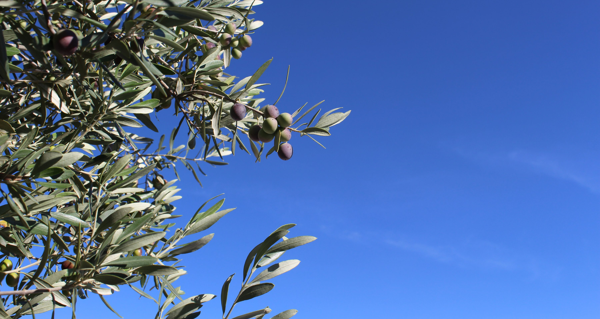
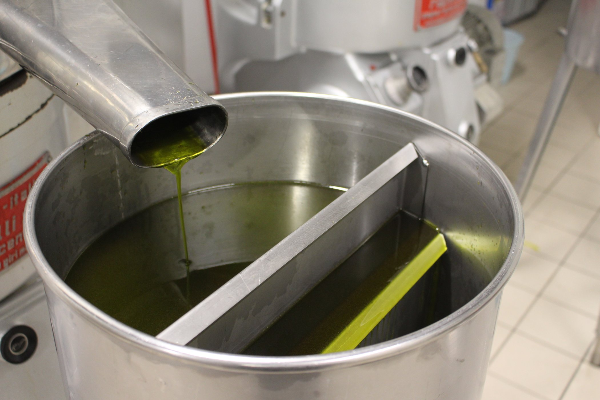
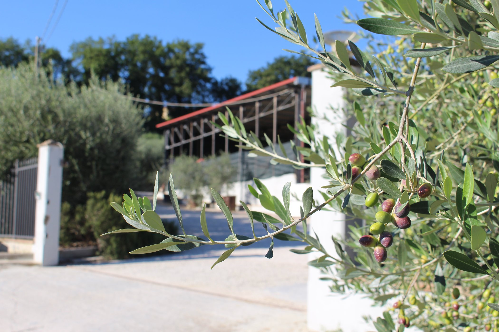
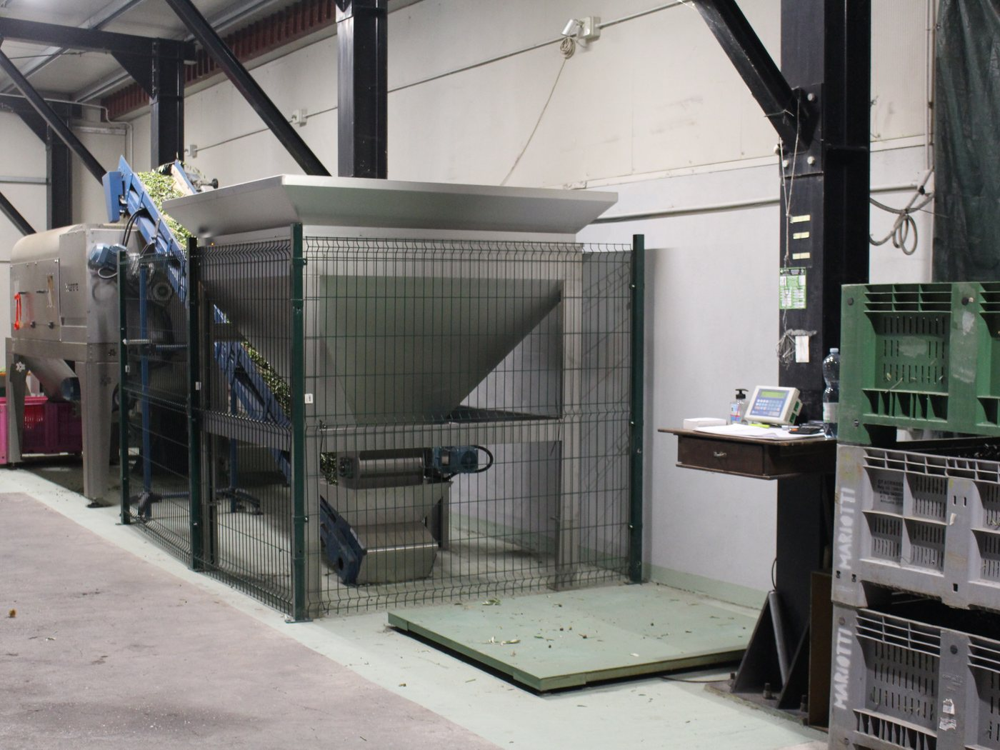
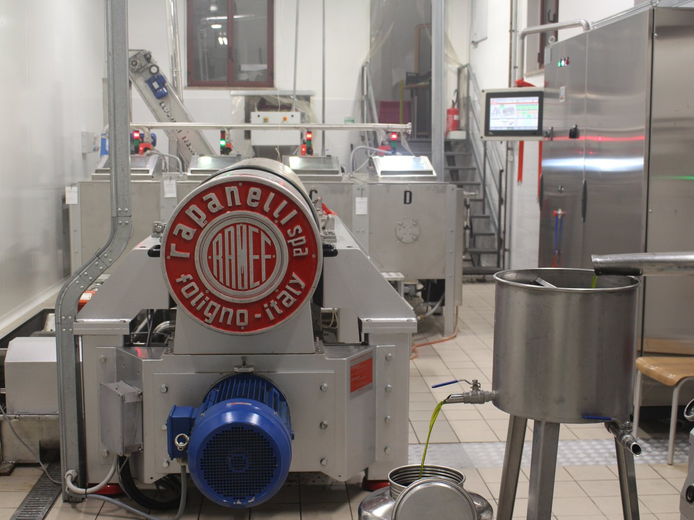
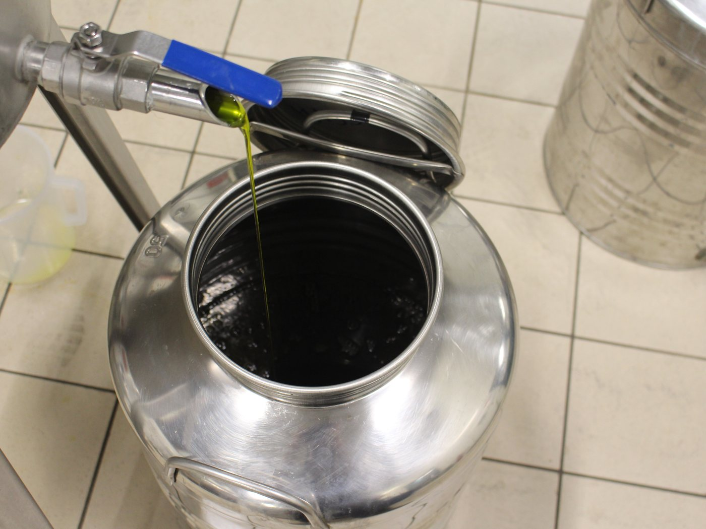
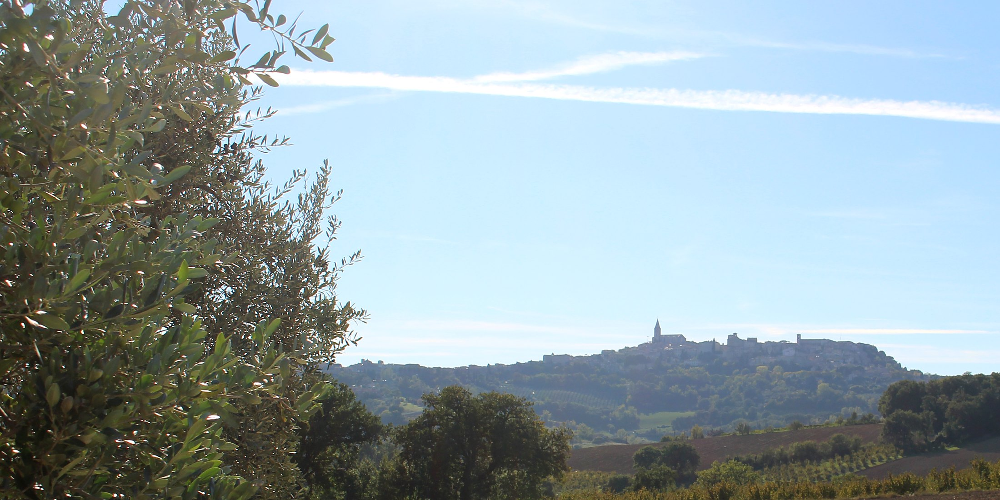
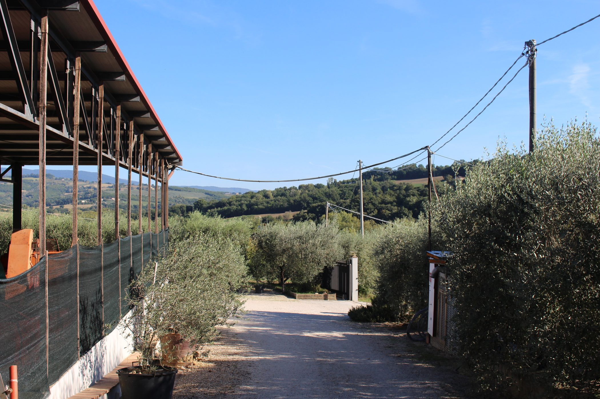
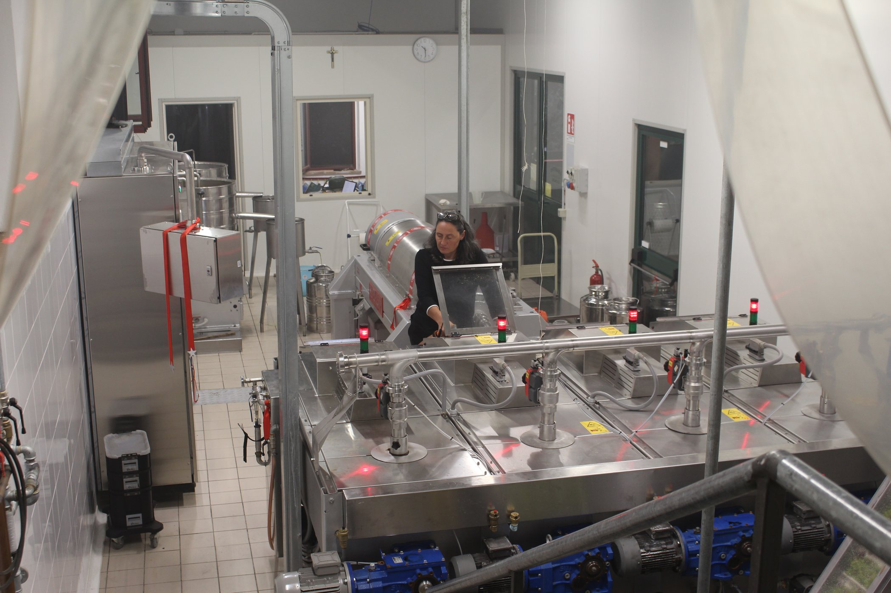

Milling for growers
Have olive trees of your own? Bring us your olives and take home your oil.
How to bookOne family,
one oil.
Perucca is a top-quality extra virgin olive oil from our estate near Todi, in the hills of Umbria. Every choice, from the tree to the bottle, is ours.
It is green in the glass and grassy on the nose, and it catches at the back of the throat: that peppery bite is polyphenols, exactly what good oil should do. We make a limited amount each year; when it is gone, it is gone until the next harvest.

Our 2026 oils
-
Traditional blend
Moraiolo-based
Balanced but intense, with an exceptional flavour.
-
Favolosa
single variety
Aromatic, fresh and heady on the nose; balanced and delicate in the mouth.
-
Don Carlo
single variety
Delicate on the nose, more intense in the mouth: a burst of fruity flavours, with a peppery kick.

Made the slow way,
because the fast way
tastes of nothing.
A lot of olive oil is made for volume: the harvest is rushed, the fruit gets bruised, and the olives wait before they reach the mill. None of it shows on the label. You can taste all of it.
We harvest only in ways that keep the fruit whole, and the olives go straight to our mill. It takes longer and makes less oil, but the oil is better.
How the oil is made
The same steps for our own olives and for the growers who bring us theirs.



Weighing and cleaning
The olives are weighed, then cleared of leaves and washed.
Crushing
They are crushed into a fine paste.
Malaxing
The paste is stirred slowly, so the tiny drops of oil can join together.
Extraction
The decanter spins the oil away from the water and the pomace.
New oil
Out comes the new oil, ready to taste.
Umbria
Umbria is one of Italy's great olive oil regions: hills at the foot of the Apennines, where olive trees have been grown for more than two thousand years. The hills are breezy, the climate has just the right balance of coolness and moisture, and the soils are mixed, loose and free-draining. Alongside traditional varieties such as Moraiolo, famously rich in polyphenols, grow varieties bred right here, such as Favolosa and Don Carlo. That is where Umbrian oil gets its character.

A mill, a hill,
and very little else
We are at Località Marciliana Bassa, in the countryside outside Todi: olive trees, open hills and a great deal of quiet. Rustic, unpolished and, on a clear morning, simply wonderful.
If you are in Umbria, call ahead and come and see us.
Open in Google Maps

Bring us your olives
From mid-October to mid-December our mill also works for other growers, whether you have a handful of trees behind the house or a whole grove. Book a day by phone, telling us roughly how many kilos you will bring, and take home your oil. You are welcome to stay and watch the whole process.
Own a house in Umbria with a few olive trees? Call us and we will explain how it works.
Bring olives picked within a day or two, in ventilated crates and never in sacks.
Book a day: +39 342 644 5624How to order
Call us and tell us which oil and how much you would like: you can collect it at the mill, or we can arrange shipping.
Calling from abroad? Message us on WhatsApp and we will call you back.